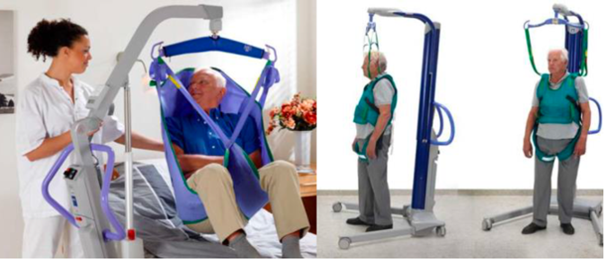

Abstract
This project is part of a broader vision to develop lifting robot assistants and an eco-system of devices for a smart hospital room concept. This research specifically addresses the limitations of traditional ceiling lifts by introducing a high-performance dual-motor actuator.
Ceiling lifts are essential for patient handling, but they traditionally struggle with the trade-off between high lifting force and high-speed motion for efficient setup. By utilizing a dual-motor configuration with a differential mechanism, we enable both high force capacity and high speed in a compact form factor. This technology aims to facilitate mobility and rehabilitation by allowing for more dynamic and responsive assistance during patient care.
Publications & Resources
Project Media

